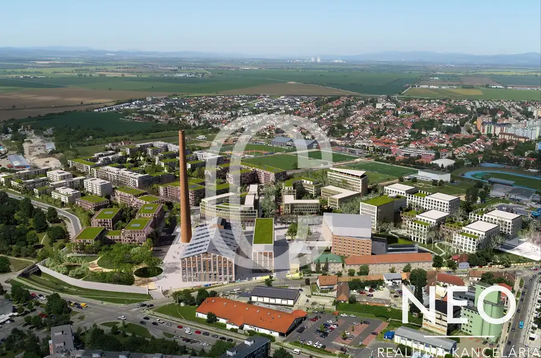
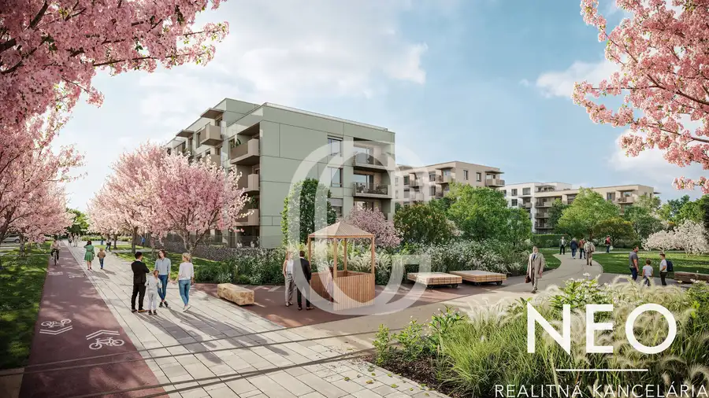
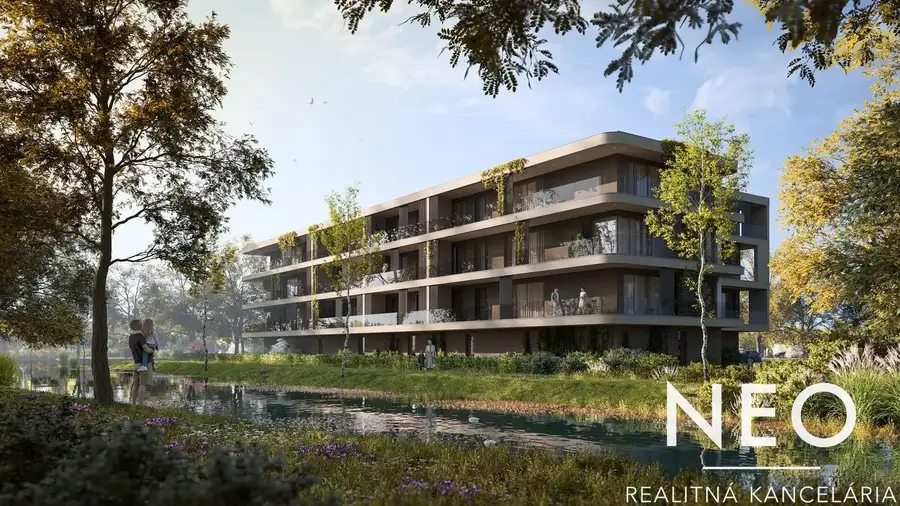

CUKROVAR - 3-izbový byt s výhľadom na Športový areál Slávia | SŤAHOVANIE LETO 2029
Trnava
- Dispozícia3-izbový
- Plocha68.44 m²
- Poschodie2. z 6
- StavNovostavba
- VlastníctvoFiremné
- Energetická triedaA
O nehnuteľnosti
Projekt Cukrovar, za ktorým stojí developer UNITED Real Estate, prináša do mesta nový impulz a postupne bude meniť jeho tvár. Na mieste bývalého priemyselného cukrovaru dnes vzniká moderná mestská štvrť, ktorá spája historický odkaz s moderným bývaním a ponúka všetko, čo si dnes predstavujeme pod moderným štandardom bývania. Na takmer 20 hektároch územia vznikne v rámci 13 etáp rozsiahly rezidenčný projekt s viac ako 2 000 bytmi a bohatou občianskou vybavenosťou. Súčasťou novej štvrte bude mestský bulvár s budúcim námestím aj veľký park Sladká alej s unikátnym detským ihriskom. Vďaka prepojeniu moderného mestského komfortu s príjemným prostredím sa vytvorí zóna a plnohodnotný priestor pre život jednotlivcov aj rodín.Byty sú dokončené v kvalitnom štandarde – s kompletnými kúpeľňami, podlahami, interiérovými dverami a veľkými oknami so zníženým parapetom, ktoré zabezpečujú množstvo denného svetla. Samozrejmosťou je aj predpríprava na klimatizáciu a vonkajšie žalúzie. Projekt kladie dôraz aj na udržateľnosť a dlhodobý komfort bývania: premyslené dispozície, energetická trieda A0, príjemné vnútrobloky, zelené strechy, solárne panely a moderné technológie.______________________________________________________________________________________________________________KONKRÉTNA PONUKA6B2F | 3-izbový byt | 2. podlažie Cena: 221.900 € Interiér: 68, 44 m² | Exteriér: 5 m²3-izbový byt na 2. podlaží s úžitkovou plochou 68, 44 m² a exteriérom 5 m². Byt je orientovcaný na športovisko Slávia na SV stranu. ______________________________________________________________________________________________________________LOKALITA PROJEKTU– centrum pár minút pešo– Park pri kalvárii a športový areál Slávia– kompletná občianska vybavenosť– rýchle napojenie na severný obchvatŠTANDARD A TECHNICKÉ RIEŠENIEByty sa odovzdávajú v kvalitnom štandarde:– podlahy a interiérové dvere– kompletne dokončená kúpeľňa so sanitou– predpríprava na klimatizáciu, vonkajšie žalúzie a markízu– podzemná garáž a výťahRiešenia, ktoré umožňujú okamžité bývanie alebo bezproblémový prenájom bez ďalších zásadných investícií.TERMÍNY ODOVZDÁVANIAIII. etapa – leto 2026IV. etapa – leto 2027V. etapa – jeseň 2027VI. etapa - leto 2029V ponuke na webe projektu Cukrovar nájdete byty IV., V. a VI. etapy.https://cukrovar.skDohodnite si so mnou stretnutie – rada vám projekt predstavím osobne priamo na mieste.Mgr. Barbara Mruškovičová, RSc. | mruskovicova@neoreal.sk | +421 915 119 052
Parametre
| Cena vrátane energií | Nie |
|---|---|
| Druh | 3 izbový byt |
| Dátum zverejnenia | 29. 1. 2024 |
| Energetická náročnosť | Nízkoenergetický |
| Energetický certifikát budovy | A |
| Orientácia | Východná, Severovýchodná |
| Podlažie | 2 |
| Počet balkónov | 1 |
| Počet izieb / miestností | 3 |
| Počet nadzemných podlaží | 6 |
| Rok kolaudácie | 2029 |
| Rok výstavby | 2026 |
| Stav nehnuteľnosti | Novostavba |
| Telekomunikácie | Optická sieť |
| Typ | Predaj |
| Typ konštrukcie | Železobetónová |
| Umiestnenie | Zvýšené prízemie |
| Vlastníctvo | Firemné |
| Vybavenie | Výťah, Balkón |
| Vykurovanie | Ústredné |
| Úžitková plocha | 68.44 m² |
Kde to je


Mohlo by Vás zaujímať

BytNové10 162 461 €CUKROVAR - 1-izbový slnečný byt s lodžiou ako IDEÁLNA INVESTÍCIA Trnava 1-izbový26.34 m²2. podlažie Projekt Cukrovar, za ktorým stojí developer UNITED Real Estate, prináša do mesta nový impulz a postupne bude meniť jeho tvár. Na mieste bývalého…
BytNové6 203 755 €CUKROVAR TRNAVA | 2-izbový byt s výhľadom do vnútrobloku | SŤAHOVANIE ZIMA 2027 Trnava 2-izbový44 m²5. podlažie Projekt Cukrovar, za ktorým stojí developer UNITED Real Estate, prináša do mesta nový impulz a postupne bude meniť jeho tvár. Na mieste bývalého…
BytNové10 295 900 €NEO / Projekt LAKESIDE 36 / nadštandardný 3-izbový byt s lodžiou / Piešťany, pri Sĺňave Piešťany 3-izbový84.86 m²3. podlažie V Piešťanoch, v pokojnej rekreačnej časti pri vodnej nádrži Sĺňava, vzniká komorný rezidenčný projekt LAKESIDE 36. Ponúka len 36 apartmánov, ktoré…